Process Timeline Activity Types
There are a number of different Timeline Activity Types. While there are some broadly-applied, general settings that are applicable to each Activity type, there are also custom configuration settings that are specific to each Activity type, which will be discussed below. For more information on the general Timeline Activity settings, please see the Process Timeline Activities topic.
Background Operations #
Users are assigned a task when they are added to a Process Timeline activity. A context sensitive web page or Form is displayed that is specific to the task type when the user selects the entry in their Task List, or the link in their email notification. Each task type defines a set of functions or actions that can be performed, as well as custom instructions for the participants. The activity’s type can be set using the Activity Type dropdown in the Activity tab of the activity’s properties.
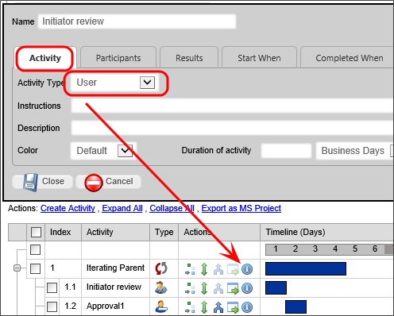
A Timeline Activity of the Custom Task, Script or Sub-Process types can be configured to run in the background by checking the Run this activity in the background (if unsure, leave this box unchecked) check box in the Advanced Options tab. Setting the operation to run in the background can be used to prevent a long-running, machine-centric Activity in the Process Timeline from hanging a user session while the processing occurs. The Activity will be run in a different context than the current user that caused the transition of the Activity. Additionally, if you have a Rendering Server enabled, the background processing will be conducted by the Rendering Server when the option is checked.
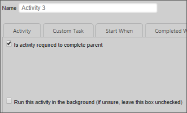
Please note that, when this option is selected, if the user's task is followed (after one or more intervening "background" tasks) by another task assigned to the same user, the current behavior in which the window remains open and is refreshed with the Form for the subsequent task will no longer be seen. Instead, the user will have to click the appropriate link in their task list or email notification to open the new task.
On some systems, when starting a subprocess using the asynchronous option, the system can mark the calling task as complete before the called subprocess completes. This may be especially true if the subprocess contains complex rendering operations. To avoid this, a wait time, in seconds, can be set using the nAsyncSubProcessWaitSecs variable in the Custom Vars file. The default setting for this variable is 5 seconds.
Activity Configuration Tabs #
All activities share a few common tabs in their configuration windows.
Activity Tab
Determines the type of activity, and possible the instructions and duration of the activity. The duration of the activity can be configured in various time units. Configuration and functionality details for specific activity types are documented for each activity type.
Start When Tab
Determines when the activity will run, i.e. what must happen before the activity starts. The activity’s start time can depend on the state of other activities, or via arbitrary conditions. Activity dependencies can be added via the Add Dependency button, and the dependence specified via a dropdown. Arbitrary conditions allowing the activity to start can be configured via the condition builder by click on the Click to create condition... link.
Clicking the Recurring Activity check box makes an activity a recurring activity, and enables you to configure the time interval at which the activity repeats. The activity will not recur if the box is unchecked. This option is relevant primarily for activities in which you have set a Start When condition. When an activity is set as a recurring activity, the activity, once completed, will automatically restart again at the time interval specified, until the Start When condition is no longer met. If you make an activity a recurring activity without a Start When condition, it will restart indefinitely, though the system's internal loop checks will eventually cancel the recurrence as an indefinite loop.
Completed When Tab
Determines when the activity is completed. The dropdown determines whether the activity is completed when all users have completed the activity or when the first user has completed the activity. Arbitrary conditions for completion can be configured using the condition builder by clicking the Click to create condition... link.
Needed When Tab
Determines when the activity is enabled or when it is ignored. Conditions for enabling the activity can be configured using the condition builder by clicking the Click to create condition... link.
Due Date Tab
Determines the due date for the activity. The due date can be set in three ways. It can be calculated relative to the start of the activity. Using the dropdown menu, it can be calculated relative to the actual start of the activity, the configured start of the activity, or can be set via other means. The Set due date from form field field enables the determination of the due date from a form field, and the Set due date from system variable field enables the determination of the due date from a system variable.
Notifications Tab
Determines when users are notified about the task. Checking the Notify participants when activity starts checkbox will notify the participants when the activity starts using the email template specified in the Using email template field.
Additional notifications can be added with the Add Notification button. The occurrence of the notification is specified using the Choose Notification Time dropdown, which allows the creation of a one-time notification or a recurring notification.

Advanced Options Tab
Determines whether the activity is required to complete for the parent activity to complete, and whether a late start or finish date in the activity should show as an error in reports. The Advanced Options tab for each activity type may show very different property settings.
User Activity #
The user Activity is any actionable item assigned to a user. If a user Activity has been assigned to a user, a task will appear in the user's Task List. The user must complete the task before it can be removed from the Task List. A user who is assigned a task will be automatically given permission to any object in the Process Timeline package so they may complete the task. Examples of this task can be an approval task or update task.
When a Process Timeline Activity is assigned to a user with an invalid UID or user ID, Process Director will immediately stop the process, and place the Process Timeline Activity into an error state. This is also true for anonymous user assignments if the email address is not a valid format (Process Director cannot validate the email address itself, only the format).
Participants Tab

Determines which users are a part of the user task. Users can be added via the Add Participant button, and the participants can be specified via the Participant Type dropdown.

When multiple users are assigned to a task, a sub task can be automatically created for each user. You must have a form field that specifies the name of each desired subtask. For instance, you might assign a task called "Approvals" to two users, in sequence. In that case, you would need two form fields, one of which has a default value of "Approval 1", and the other "Approval 2". When the users complete their task, Both the Task Name and Sub Task name will be assigned to each user, so that you can track both the task, and sub tasks for each user, as they are completed.
Due Date Tab
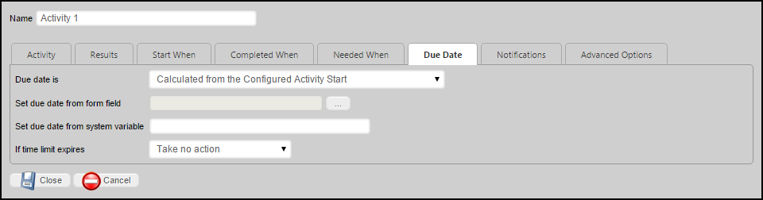
The standard options for the Due Date tab are described in the Due Date Tab section of the Timeline Activities Topic. The User activity type also has an additional option specific to the User activity type.
If time limit expires
A dropdown that specifies the actions to take when the Due Date expires. The following options are available.
|
Take no action
|
Lets the activity continue running.
|
|
Cancel This Activity
|
Cancel the activity and automatically advance to the next activity in the Process Timeline.
|
|
Add These Users from Business Rule
|
Add users identified in the Business Rule.
|
|
Replace existing users with those in Rule
|
Add the user from the Business Rule and cancel any running users.
|
|
Cancel the entire Timeline
|
Cancel the Process Timeline.
|
Advanced Options Tab
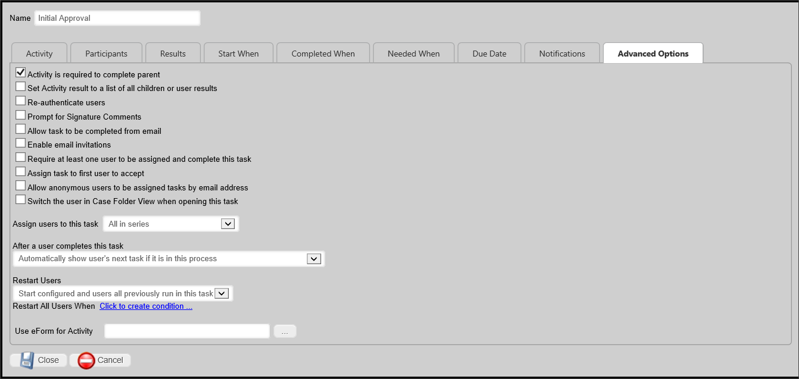
The advanced options tab contains miscellaneous options for configuring a user activity. It contains many more configuration options than the generic Advanced Options tab. This is the most common Activity type, and the detailed explanation of the Advanced Options Tab for the User Activity Type is presented in the Process Timeline Activities topic.
Notify Activity #
The notify task allows you to notify users or groups during a process. Most of the Notify Task options are configured via the generic configuration options for an activity, except for the Options in the Advanced Options tab
Advanced Options Tab
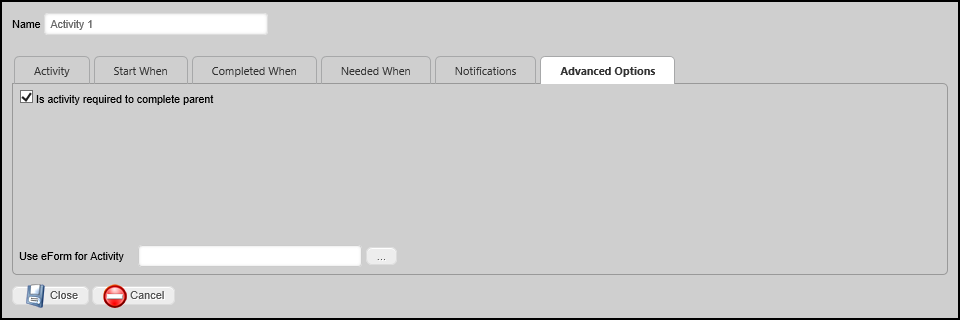
There are two Advanced options for Notification activities.
Is Activity required to Complete Parent
This option defaults to true, so that the Parent activity, if any, cannot be completed until this activity is complete. This is, by far, the most common relationship between parent/child activities.
Use Form for Activity
This option enables you to specify a form instance for a particular notify step/activity. This feature is useful when configuring email templates to include information from a form instance other than the default form for that process.
Process Activity #
The Process task allows you to specify a process to run. This can be a workflow or Process Timeline.
Process Tab

Determines the process that the Activity starts. It also allows objects in the child process to be copied to the parent and vice versa. The objects copied can be limited to a specified group.
Start Process When Activity Begins
You may use the Object Picker to select a process that will automatically start when the Activity starts. The selected process will run as a child process of the current process, i.e., the process containing this Activity.
Copy Objects in Timeline Package to Parent
Checking this option will copy all objects in the child process to the current process.
Only from this group
You may enter the Group Name. Only objects from the specified group will be copied from the child process.
Copy Objects in Timeline Package to Child Process
Checking this option will copy all objects in the current process to the child process.
Only from this group
You may enter the Group Name. Only objects from the specified group will be copied from the current process.
Script Activity #
The Script task supports the ability to call custom script functions. For more information on the custom scripts refer to the Scripting section of this guide.
Script Tab

The script tab determines the script to be run. The script file is determined via contest list object picker. The script parameters are passed to the script as a string.
Script File
You may use the Object Picker to select a script that will automatically start when the Activity starts.
Script Parameters (optional)
You may enter a parameter string to pass to the selected script.
Advanced Options Tab
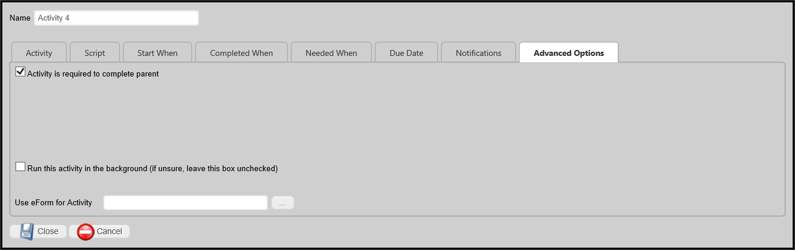
Use Form For Activity
In Timeline, if parent activity has "Use Form for Activity" specified with particular form, then all child activities will default to the same form. This property enables a Script Activity in a Timeline to specify a different Form to use a current form for the activity. If this property is not configured, the Process Director will check the parent Timeline activity for a configured Form and, if set, it will use that Form. Otherwise, Process Director will revert to passing the script to the current form instance that is associated with the running process.
Custom Task Activity #
This enables you to use a Custom Task as the activity.
Custom Task Tab

Specifies the Custom Task(s) to be run for this activity. To add additional Custom Tasks, click the Add Custom Task button.
Custom Task
You may use the Object Picker to select a Custom Task that will automatically run when the Activity starts.
For details on how to configure custom tasks, see the Custom Tasks documentation.
Form Actions Activity #
This task configures which Form will be the default within the process, and allows new forms to be attached.
Form Options Tab
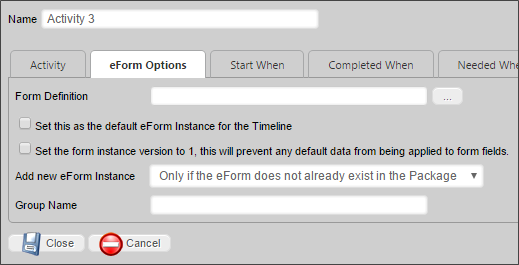
Form Definition
You may use the Object Picker to select a form definition to be attached to the process.
Set this as the default Form Instance for the Timeline
Checking this option will make the selected Form the default form for this Timeline Instance.
Set the form instance version to 1, this will prevent any default data from being applied to form fields
This option will create the Form instance with a version of 1. Normally the version is set to a special value to indicate that the form has never been saved by a user which prevents it from showing up on Knowledge Views, and also applies the default data to the Form fields. Checking this option will cause the form instance to NOT use default data.

You should not use this option unless you know that your application specifically requires this behavior.
Add new Form Instance
Specifies the conditions under which a new instance of the form definition is created and then attached to the process.

Group Name
Assigns a group name to the added form instance.
End Process Activity #
Enables you to terminate the running Process Timeline.
Branch Activity #
Enables an activity to jump or branch to another activity in the running Process Timeline. For Process Director v3.49 and above, the use of this Activity type should be replaced, in most cases, by the use of the iteration functionality available in the Parent Activity type.
Branch Tab

The Branch tab determines where the activity goes, as specified by the “Branch Type” dropdown. The Branch can either roll back to the activity on which it depends or start or jump to a new activity. Jumping to a new activity skips all the activities in between; they will not be started this process instance. Starting a new activity allows the steps in between to start as they normally would.
Branch Type
This dropdown control contains the following configuration options:
- Rollback: This will branch back to an earlier activity and proceed normally from there. This branch can only be configured to roll back to an activity preceding this activity on the dependency hierarchy. The activity must be dependent on the activity to which this activity rolls back, or it must be dependent on an activity dependent on that activity, and so on. For users of Process Director 5.26 and higher, Timelines can be rolled back to Parent activity types.
- Start: This will start the defined activity, complete this branch activity, and then continue processing normally from this point.
- Jump: This will transfer control from this branch activity to the activity we want to jump to, any activity “dependent” on this branch activity will NOT get run.
Branch to Activity
This dropdown contains a list of available Activities to which you may branch in the Timeline .
Parent Activity #
Parent activities are containers for other activities, referred to as “Children”.
You should not use any other type of activity as a Parent Activity.
In Process Director versions 3.45 and higher, additional functionality has been added to Parent activity types: Results Concatenation and Looping.
Results and Result Concatenation
By default, the result of a parent activity is set to the result of the child task whose completion resulted in the completion of the parent (this behavior is implemented in Process Director v3.45 and up. In previous versions, the parent never has a result.). Parent activities have the option of setting the result of the Parent activity to a comma-separated list of all the child results. This list will contain only the results from the immediate child activities of the Parent activity; it will not use results from any Parent activities that have been created under the top-level Parent. If the parent is configured to loop, only the results from the final iteration will be included. If the parent contains other parent activities, only the results from the direct children of that parent will be included; the results from the children of "subparents" will not be included.
Looping Tab
Parent activities can also be used to create loops within your Process Timeline. When configured this way, the Children are referred to as a “looping segment”, i.e., a segment of your Process Timeline that iterates, or loops. A looping segment will continuously loop through the child activities until a user-defined condition, or set of conditions, is satisfied.
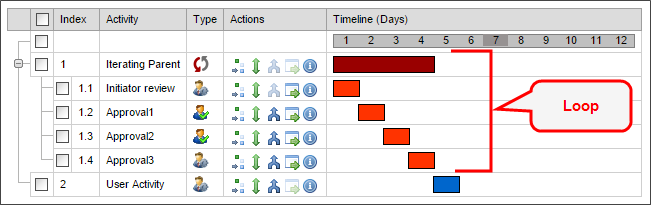
Selecting the Parent activity type will display a Looping tab in the designer, from which the iteration conditions can be specified.
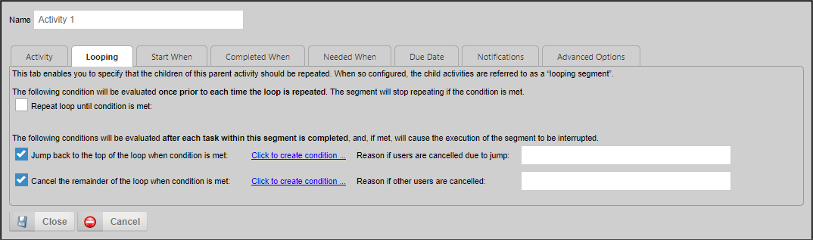
A parent activity that implements iteration will also display a unique icon in the Process Timeline definition.
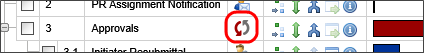
The Looping tab contains three methods for controlling iteration through the child activities, each of which controls some aspect of how the looping segment will work by determining the conditions under which the following actions will occur:
- Stop repeating the loop
- Jump back to the top of the loop
- Cancel the remaining activities within the segment and stop repeating the loop.
Here’s how these three methods work.
Repeat Loop Until condition is met
Each time Process Director prepares to execute the looping segment, this condition will be evaluated to determine whether or not to do so. If the condition is not met, the looping segment will start again. If the condition is met, however, the loop will not be repeated, and the parent activity will be marked as complete. Any successive activities in the Process Timeline will now be eligible to run.
The remaining methods of controlling the loop rely on conditions that are evaluated each time any child activity completes. When the relevant condition is met, execution of the loop will be interrupted.
Jump back to the top of the loop when condition is met
When the specified condition is met, the current loop will be immediately stopped, and the loop will restart with the first child activity.
Cancel the remainder of the loop when condition is met
When the condition specified by the user is met, the current loop will be immediately stopped, and the parent activity will be marked as complete. Any successive activities in the Timeline will now be eligible to run.
It is quite possible that you will need to configure all three methods. As an example, let's consider a simple approval process for a request. Suppose that each level of approval can end in one of three results: Approve, Reject, and Terminate. In this case, we might want to configure the segment as follows:
- Stop repeating the loop when all approvers approve the request
- Exit the segment any time an approver chooses the terminate option
- Jump back to the top of the segment when any approver chooses the reject option, to give earlier reviewers a chance to make changes.
The first method for controlling the loop relies on a condition that is evaluated when your Process Timeline first runs the parent activity, and then again each time the looping segment completes (that is, each time all of the activities in the loop have completed).
Reason If Other Users Are Canceled/Canceled due to jump
This property gives you the ability to provide an administrative comment that will show up in the Routing Slip for the Timeline if the loop is canceled or restarted and cancels users in parallel activities.
Advanced Options Tab
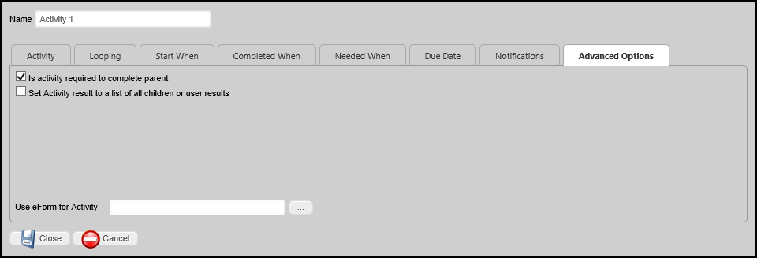
Set Activity result to a list of all children or user results
Selecting this option concatenate the results of all child activities to a comma-separated list of results.
Related SysVars
The looping functionality is normally predicated on the results of the Child Activities. Specific System Variables have been implemented to make accessing the results of the Child Activities easier.

The Iteration SysVars are available from the Timeline Activity branch of the condition builder's System Variables menu, and consist of:
Follow the links above to see a detailed explanation of each System Variable.
A parent activity that implements iteration will display a unique icon in the Process Timeline definition.

Wait Activity #
Wait tasks cause the Process Timeline to pause for a specified amount of time, or until a specific condition applies.
Activity Tab
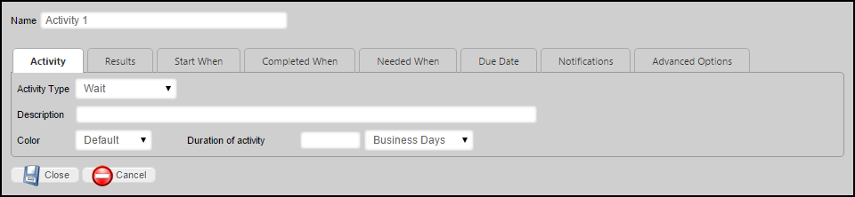
Duration of Activity
Enables you to specify the length of time to wait, and/or to set the calculated due date. Any time-related Wait activity must should have a Duration set. If no Duration is set, the wait activity will automatically complete, unless a condition on the Completed When tab is set.
Completed When Tab
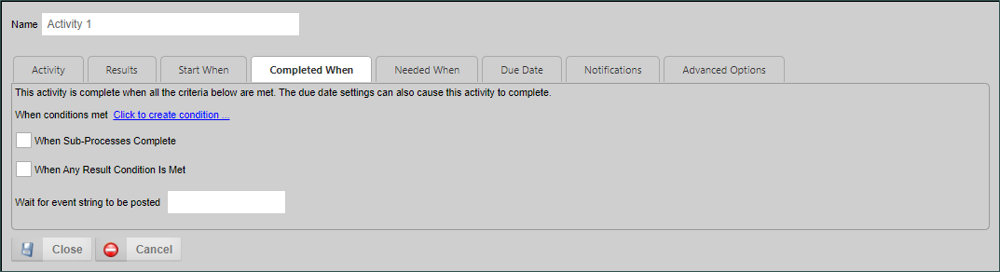
The Completed When tab enables you to specify condition-based criteria for determining the length of the Wait activity. The following options are available:
|
When conditions met
|
End the activity when a specified condition set has been met.
|
|
When Sub-Processes Complete
|
End the activity when all running sub-processes complete.
|
|
When Any Result Condition is Met
|
A wait activity can have Results, and each Result can have specific conditions to determine which Result condition will end the task, and should be set as the result of the activity.
|
| Wait for event string to be posted |
If this option is configured, the activity will wait until that event is posted, usually from an external source or process. |
Due Date Tab
Due Date is
The Due Date Is property enables you to set the manner in which the due date for the task will be calculated. Four options are available.
|
Calculated from the Configured Activity Start
|
The due date for the activity will be calculated based on when the activity should be due, based on the configuration of the Timeline Definition's activity durations.
EXAMPLE:
The Timeline definition contains two activities, each of which takes three days to complete, then this setting will calculate the due date for the first activity as three days after the Timeline starts running, and the second activity's due date will be calculated as six days after the Timeline starts. If the first activity takes longer than three days to complete, the due date for the second activity will not be changed. Instead, the duration of the second activity will be shortened to meet the calculated due date on day six. If the first activity takes less than three days, the duration of the second activity will be lengthened to remain due on day six.
Activity 2 will always be due on day six.
|
|
No calculated due date
|
The system will not calculate a due date for the activity. Without a due date, escalations and notifications that are based on due date conditions will not run.
|
|
Calculated from the actual activity start
|
The due date for the activity will be calculated based on when the activity actually started, rather than when it is configured to start. An activity that is configured for three days duration will calculate the due date as three days after the activity actually started.
EXAMPLE (Continued):
Irrespective of the length of the first activity, the second activity's duration will not be changed. The due date will be recalculated to enable the full three days of duration for the activity.
Activity 2 will always be due three days after it starts.
|
| Calculated from minimum of Actual or Configured Activity start |
The activity's due date will be calculated by choosing the soonest date between when the activity was configured to end, or the due date calculated from when the activity began.
EXAMPLE (Continued):
With this setting, if the first activity takes less than three days to complete, the second activity will become due three days after the activity begins. On the other hand, if the first activity takes longer than three days, the system will shorten the activity duration to ensure it becomes due on day six, as configured in the Timeline definition.
Activity 2 will be due either three days after it begins, or on day six, whichever is soonest.
|
If time limit expires
This dropdown shows items specific to this activity type, to determine how the Activity will respond to the expiration of the Duration of Activity property that is set on the Activity tab.
|
Take no action
|
Let the activity continue running.
|
|
Cancel This Activity
|
Cancel the activity and automatically advance to the next activity in the Process Timeline.
|
|
Cancel the entire Timeline
|
Cancel the Process Timeline.
|
| Wait until at least Due Date |
Keep the activity in a wait status until at least the specified due date. This must be set when using the Wait activity to pause for a specified period of time, as determined by the Duration of Activity you set in the Activity tab. |
It is possible to set both a time- and condition-based Wait-activity. The settings you choose on this tab will, however, change the way the activity responds. For example, if you set both a completion condition as well as a Duration, then set the If Time Limit Expires property to "Wait until at least Due Date", then the activity will NOT end until the Duration expires, even if the condition evaluates as true.

Setting a
Duration AND setting the
If time limit expires property to "Wait until at least Due Date", will ALWAYS keep the Timeline activity in a wait status until the
Duration time is met.
Case Activity #
The Case activity enables you to perform Case Management actions automatically, without requiring any user interaction.
Case Options Tab
The Case Activity has a Case Options tab where Case Management operations can be selected.
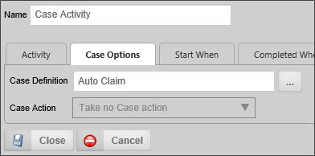
Case Definition
An Object Picker that enables you to select the Case definition on which the action will be conducted.
Case Action
The Case Action property consists of a dropdown that identifies the action the activity will take. the available options are:
- Take no Case action: No case action will be taken.
- Create a new Case instance: A new Case Instance will be created for this process, using the selected Case Definition. If this option is selected, the process will automatically be removed from its current case.
- Add to an Existing Case Instance: This option will add the current process as a new item in a specified case instance. If this option is selected, the process will automatically be removed from its current case.
- Remove Process from Case Instance: This option will remove the current process and all attachments from a case instance.
If you select either Create a new Case instance or Add to an Existing Case Instance from the Case Action property, the following options will become available:
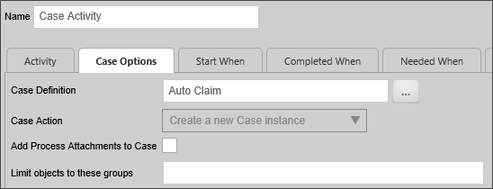
Add Process Attachments to Case
Checking this box will add all attachments to the selected case, unless modified by the Limit objects to these groups property.
Limit objects to these groups
This property will accept a single Group name, or a comma-separated list of Group names to copy only attachments in the specified group(s). Additionally this property enables you to enter "" (double quotation marks) into the property, to return only those objects that have no Group name specified.
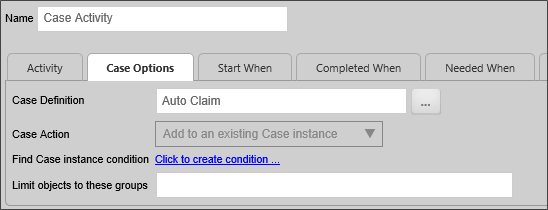
Find Case instance condition
If you select the Add... or Remove... options from the Case Action property, you can identify the specific Case Instance to modify by using the Condition Builder to create a condition set that will return the desired case instance.
Advanced Tab
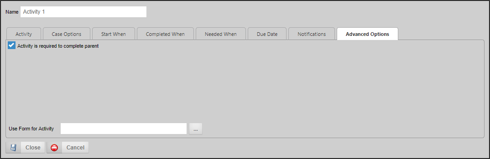
Use Form for Activity
For Process Director v5.1 and higher, this property enables you to choose a specific form definition to use for conditionals using field names. This is useful when you are using multiple form definitions with the process.